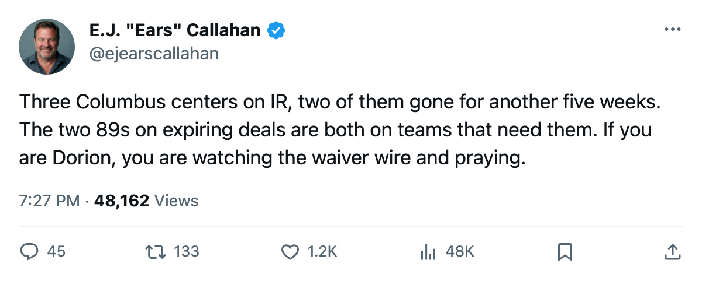
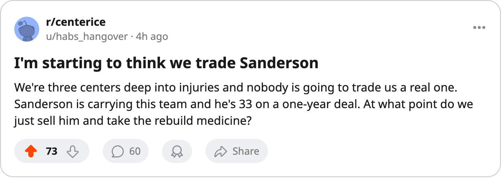

RUMOR METER: Columbus Has 3 Centers on the Shelf and an Empty Rental Market 🔥🔥
Knutsen and Wright return February 19 and 20. The only expiring 89-rated centers in the league are on teams that want them.
 E.J. "Ears" CallahanInsider · The Hot Stove
E.J. "Ears" CallahanInsider · The Hot Stove

Columbus center desperation meets an empty rental market

 Columbus Blue Jackets have
Columbus Blue Jackets have  Todd Marchant82,
Todd Marchant82,  Espen Knutsen80 and Tyler Wright77 on the injured list. Marchant's knee keeps him out until January 30. Knutsen's rib and Wright's abdomen carry return dates of February 20 and February 19. That is a five-week stretch with 3 of the club's top centers unavailable.
Espen Knutsen80 and Tyler Wright77 on the injured list. Marchant's knee keeps him out until January 30. Knutsen's rib and Wright's abdomen carry return dates of February 20 and February 19. That is a five-week stretch with 3 of the club's top centers unavailable.
The trade deadline is 66 days away. Columbus sits 3rd in the Central with 54 points and a $1.15M cost per standings point. The club posted an $18.34M profit last season and the room is comfortable at 93.4 club average morale. Payroll room and patience, both there.
The problem is what they would be moving for.
The contract-year class carries exactly 2 centers rated 89.  David Legwand92 of
David Legwand92 of  Nashville Predators, $8.37M, 55 points in 39 games before a shoulder shut him down, is out until February 12. Nashville holds 2nd in the Central at 55 points with a $25.82M profit and a room at 93.2. They are not trading their center while he is in the lineup and the playoff picture is in reach.
Nashville Predators, $8.37M, 55 points in 39 games before a shoulder shut him down, is out until February 12. Nashville holds 2nd in the Central at 55 points with a $25.82M profit and a room at 93.2. They are not trading their center while he is in the lineup and the playoff picture is in reach.
 Vincent Lecavalier90, $2.60M, 52 points in 42 games, is the cheapest 89-rated name in the class.
Vincent Lecavalier90, $2.60M, 52 points in 42 games, is the cheapest 89-rated name in the class.  Tampa Bay Lightning leads the Southeast at 53 points with a club morale of 98.3, the highest reading in the league. Tampa Bay is a buyer here. Lecavalier is the franchise center and he stays put.
Tampa Bay Lightning leads the Southeast at 53 points with a club morale of 98.3, the highest reading in the league. Tampa Bay is a buyer here. Lecavalier is the franchise center and he stays put.
That leaves the market below 89. Columbus needs someone to anchor a first or second line through late February. The contract-year sheet shows no other center who can fill that slot at an expiring price.
League sources say Columbus has placed calls. The Meadowlands is listening.
The other road leads through  Geoff Sanderson84. He is 33, $6.34M on an expiring deal, and has 54 points in 42 games. Sanderson is a left winger. He can slide over in the lineup, but he does not solve the center slot, and at 33 on a one-year contract he is a rental himself. If Columbus stays within 5 points of a playoff spot through February, the temptation flips to seller: move Sanderson, collect a pick, reset.
Geoff Sanderson84. He is 33, $6.34M on an expiring deal, and has 54 points in 42 games. Sanderson is a left winger. He can slide over in the lineup, but he does not solve the center slot, and at 33 on a one-year contract he is a rental himself. If Columbus stays within 5 points of a playoff spot through February, the temptation flips to seller: move Sanderson, collect a pick, reset.
The center crisis makes Columbus a buyer. The expiring winger makes them a seller. 66 days to March 19.
Flame: 🔥🔥. The injury crisis is on the league's injury list. The direction is a roster read. Nobody has rung the desk to say Columbus is shopping Sanderson, and the calls about a center rental have not produced a target name yet. Two fires.

